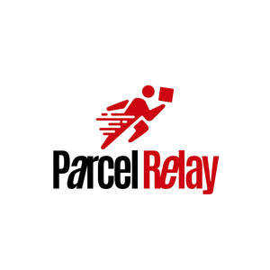

Trade Mark Journal No.2025/013 28 March 2025
UK00004169711 6 March 2025 (39)

- Class 39
- Parcel delivery; Parcel distribution; Delivery of parcels; Delivery of parcels by land; Parcel receipt services; Parcel shipping services; Parcel delivery services; Road delivery of parcels; Parcel collection services; Forwarding of parcels; Pickup and delivery of parcels and goods; Delivery of parcels by courier; Delivery of parcels by road; Parcel storage services; Delivery and forwarding of letters and parcels; Transport of parcels; Transportation of parcels; Storage of parcels; Courier services for the delivery of parcels; Delivery of parcels by air; Delivery of cargo by land; Arranging the transportation of parcels by land; Arranging the collection of parcels; Collection, transport and delivery of goods, documents, parcels and letters; Transportation of parcels overnight; Transportation of parcels by road; Freight forwarding by land; Transportation of parcels by sea; Mail delivery; Delivery of goods by mail order; Arranging the transportation of parcels; Delivery of mail by courier; Tracking and tracing services for letters and parcels; Transportation of parcels by air; Arrangement for the delivery of parcels by sea and by air; Package delivery; Delivery and forwarding of mail; Collection, transport and delivery of palletised goods; Land freight services; Arranging the transportation of parcels by sea; Gift delivery; Mail delivery and courier services; Freight [shipping of goods]; Delivery of goods; Goods (Delivery of -); Mail box rental; Express delivery of freight; Express delivery of goods; Transportation of freight by land; Collection, transport and delivery of goods; Delivery [distribution] of goods; Delivery of messages [courier]; Arranging the transportation of parcels by air; Rental of mail boxes; Franking of mail; Providing information relating to the delivery of documents, letters and parcels; Delivery of correspondence; Correspondence (Delivery of -); Delivery of packets; Courier services for the delivery of goods; Shipping of goods; Delivery of goods by rail; Subdividing and repackaging of goods; Arranging the delivery of goods by post; Delivery of messages by courier; Transportation of cargo by land vehicle; Pick-up and delivery of letters; Freight shipping; Packaging of goods in transit; Packing of freight; Despatch of goods; Delivery of goods by messenger; Messenger (Delivery of goods by -); Storage and delivery of goods; Delivery and storage of goods; Transport and delivery of goods; Pick-up and delivery of textile goods; Courier services for the delivery packages; Collection of freight; Transport by land; Packing of goods in containers; Arranging the delivery of goods; Rental of containers for freight; Transportation and delivery of goods; Delivery of letters; Letters (Delivery of -); Wrapping and packaging of goods; Shipping of cargo; Express delivery of letters; Document delivery; Delivery of wines; Newspaper delivery; Freight warehousing; Warehousing of freight.
Parcel Relay LTD